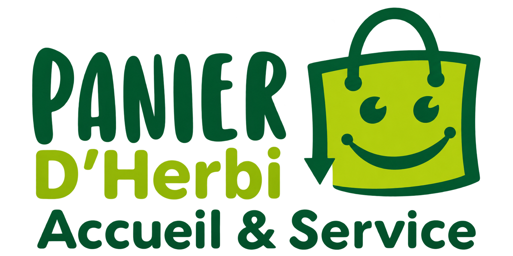
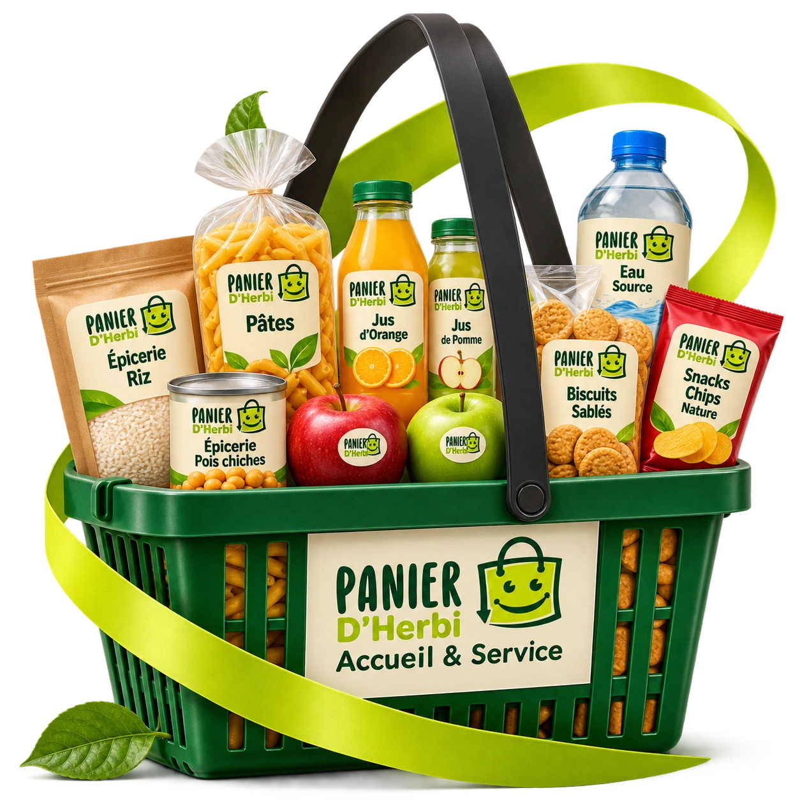
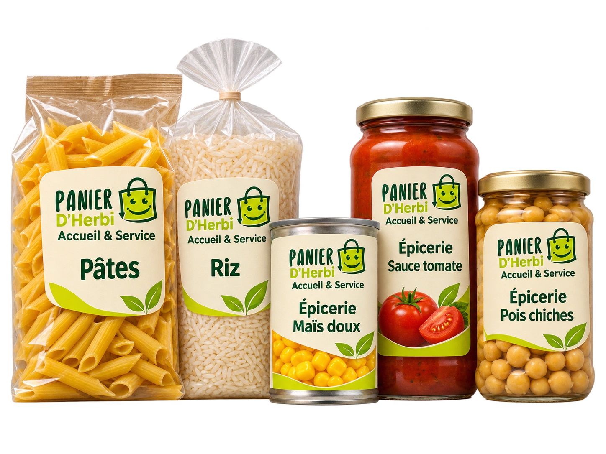
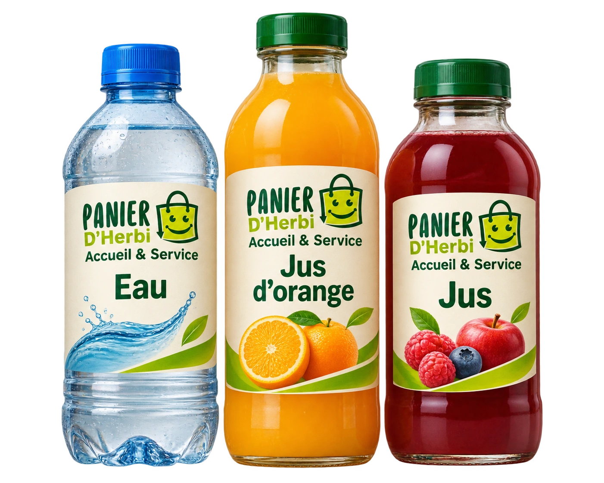
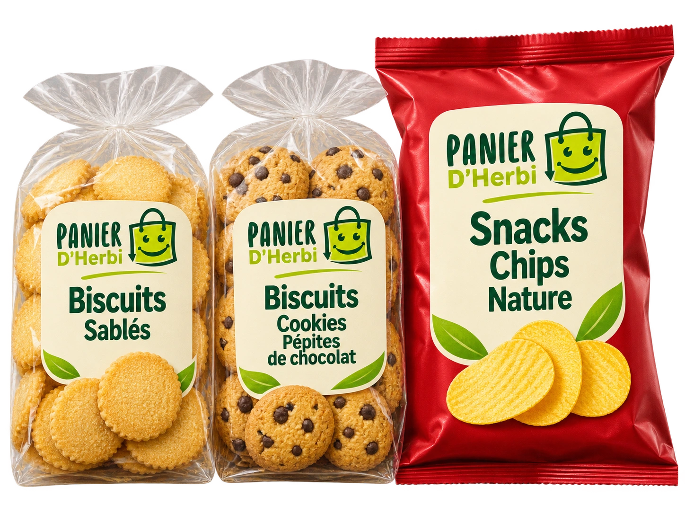
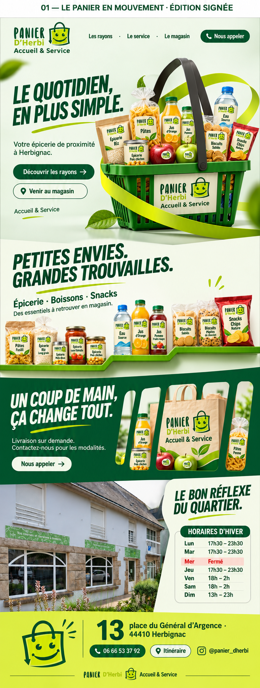
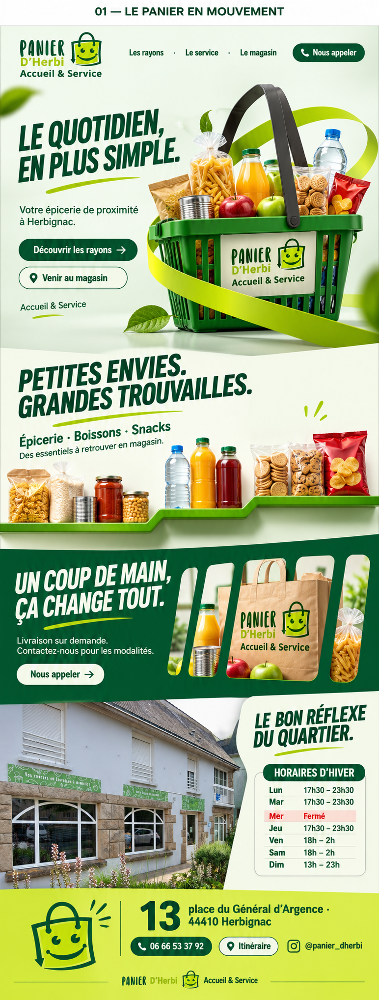

Modelo 1 · Le Panier en Mouvement · Édition signée
LE QUOTIDIEN,
EN PLUS SIMPLE.
A proposta escolhida, agora com a identidade Panier d’Herbi nos produtos. Um cesto com profundidade, um aro em lima e divisões construídas como prateleiras e aberturas de cesta.
Explorar o site →
01 / A alteração pedida
A MARCA EM CADA EMBALAGEM.



Rótulos em creme, verde e lima, com a sacola sorridente. O mesmo sistema aparece no hero, na prateleira e na cena de serviço.
Uma linha visual de campanha.
As embalagens são mockups criados para este projeto. Não representam uma linha própria ou estoque comercial confirmado. A fachada do site usa a fotografia original fornecida, preservada sem geração de uma nova loja.
02 / Identidade
PRÓXIMA. ÚTIL. RECONHECÍVEL.
Preservamos o lettering, a mascote e Accueil & Service. O PNG é uma restauração raster assistida por IA das referências; o mestre oficial poderá substituí-lo.
PETITES ENVIES.
GRANDES TROUVAILLES.
Barlow Condensed ExtraBold Italic para títulos. Barlow Condensed SemiBold para índices e horários. DM Sans para leitura e interface. Fontes e licenças incluídas.
Vert · #00683D
Profond · #004D2D
Citron · #A5C925
Lime · #C6E634
Brume · #F1F6E9
Papier · #F4F0DF
03 / Estrutura e movimento
CADA DIVISÃO TEM UMA FUNÇÃO.
| Capítulo | Composição | Movimento |
|---|---|---|
| Le quotidien, en plus simple. | Cesto rotulado e aro em um plano transparente. | Assentamento e respiração mínima. |
| Petites envies. Grandes trouvailles. | Três grupos na mesma prateleira, em degraus. | Seleção, scroll nativo móvel e ampliação. |
| Un coup de main, ça change tout. | Abas recortadas deixam ver a sacola e os rótulos. | Revelação do plano, sem vídeo. |
| Le bon réflexe du quartier. | Fachada real com painel de horários de inverno. | Entrada discreta do texto. |
| 13 place du Général d’Argence. | Mascote, endereço, telefone e itinerário sobre lima. | Fechamento estável com pausa de movimento. |
Escala de 1024 px, com limite.
Em 1024, 1440 e 1920 px: H1 de 80 px e cesto de 620 px. Fundos se expandem; o núcleo conserva a escala. Mobile usa reflow, sem reduzir o board inteiro.
QA visual em navegador: não verificado. A prévia não abriu por indisponibilidade do relay. Medidas e verificações estáticas ficam separadas da revisão visual da implementação.
04 / Referência da revisão
O MESMO MODELO, AGORA ROTULADO.
Prancha conceitual revisada com os rótulos. Não é uma captura do HTML. A implementação usa textos e estrutura nativos e os assets separados.

Comparar com o modelo original escolhido

05 / Kit